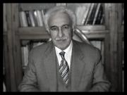

Prof. Dr. Mahmut Kaya (1945)

Yayınlar
Kitaplar
- İslâm Kaynakları Işığında Aristoteles ve Felsefesi, İstanbul 1983.
- Kindî, Felsefî Risâleler (çeviri ve inceleme), İstanbul 2002.
- İslâm Filozoflarından Felsefe Metinleri, İstanbul 2003.
Makaleleer
- "Aristoteles'in Ahlâk ve Siyâset Felsefesinin İslâm Dünyasına Yansıması", Felsefe Arkivi, sayı 22-23, İstanbul 1981, s. 207-243.
- "İbn Sînâ Felsefesinde Mutluluk Kavramı", Uluslar arası İbn Sînâ Sempozyumu Bildiriler, Ankara 1983, s. 495-500.
- "Mâhiyet ve Varlık Konusunda İbn Rüşd'ün İbn Sînâ'yı Eleştirmesi", İbn Sînâ Armağanı, Ankara 1984, s. 453-459.
- "Muhtâru'l-hikem ve mehâsinü'l kelîm'de Aristoteles'e İsnad Edilen Hikmetli Sözler ve Bunların Kaynakları", Felsefe Arkivi, sayı 26, İstanbul 1987, s.247-296.
- "Ünlü Hekim-Filozof Ebû Bekir er-Râzî ve Hekimlik Ahlâkı ile İlgili Bir Risâlesi", Felsefe Arkivi, sayı 26, İstanbul 1987, s.227-246.
- "La Formation De La Pensee İslamique et La Logique D'Aristote", Individu et Societe, İstanbul-Paris-Rome-Trieste 1988, p. 173-178.
- "İbn Kemal'in Düşünce Tarihimizdeki Yeri ve Varlık Anlayışı", Sosyoloji Dergisi, 3. dizi-sayı 1, İstanbul 1989, s.323-329.
- "XVIII. Yüzyılda Grekçeden Yapılan Tercümeler ve Es'ad Efendi'nin Fizika Tercümesi Üzerine Bazı Tesbitler", Felsefe Arkivi, sayı 28, İstanbul 1991, s.183-192.
- "Some Findings on Translations Made in The 18th Century From Greek and Es'ad Efendi's Translation of The Physica", Transfer of Modern Science & Technology to The Muslim World, İstanbul 1992, s. 385-392.
- "Peripatetik Felsefede İnsan Aklının Fa'âl Akılla Olan İlişkisi ve İbn Rüşd'ün Probleme Farklı Yaklaşımı", Felsefe Arkivi, sayı 29, İstanbul 1994, s. 21-28.
- "İslâm'ın Evrenselliği Üzerine", Ebedî Risâlet I, İzmir 1993, s. 301-310.
- "Çağlar-üstü Bir Değer Olarak Ahlâk", İslâmî Sosyal Bilimler Dergisi, III/3, İstanbul 1995, s. 123-128.
- "Felsefenin İslâm Dünyasındaki Serüveni I-II", İslâmî Sosyal Bilimler Dergisi, İstanbul 1995, II/3, s.9-14; III/2, s. 25-42.
- "Osmanlı Medreselerinde Felsefe-Kelam Münasebetleri", İslam Düşüncesinde Yeni Arayışlar II, İstanbul 1999, s.150-162.
- "Ebu Bekir er-Razi ile Ebu Hatim er-Razi Arasında Geçen Tratışma", İslam Tetkikleri Dergisi, İstanbul 1995, s.51-76.
Yönetilen Tezler
Yüksek Lisans
- Hakan Poyraz, Düşünce Tarihinde Metafizik Disiplininin Gelişimi ve Türk-İslam Felsefesindeki Yeri, İstanbul 1987.
- Mehmet Karataş, Aristoteles ve Meşşai Filozofların Tanrı Anlayışlarının Karşılaştırılması, İstanbul 1989.
- Recep Güder, Eflatun'la İbn Sîna'ın Ruh Görüşlerinin Karşılaştırması, İstanbul 1989.
- Sadık Türker, Fârâbî'de Dil ve Mantık İlişkisi, İstanbul 1997.
- Şadiye Şan, Felsefe ve Tasavvufta Fenâ-Bekâ Kavramları, İstanbul 1999.
Doktora
- Kazım Sarıkava, Yanyalı Es'ad Efendi ve Felsefe Çalışmaları, İstanbul 1992.
- Hüseyin Sarıoğlu, İbn Rüşd ve Felsefesi, İstanbul 1993.
- Gülnihal Küken, İbn Rüşd St. Thomas Felsefelerinin Karşılaştırılması, İstanbul 1994.
- Harun Anay, Celaleddin Devvâni Hayatı Eserleri ve Felsefesi, İstanbul 1994.
- Fatih Toktaş, Meşşâî Felsefenin Eleştirisi, Samsun 2002.
Çalışma Alanları
İslâm Felsefesi, Kelam, Tasavvuf, Bilim Tarihi
Özgeçmiş
Doğum Yeri ve Tarihi: Artova 1945 Göreve Başlama Tarihi: 01.01.1977 Lisans Eğitimi: İ.Ü. Edebiyat Fakültesi Arap-Fars Dilleri ve Edebiyatları Bölümü Doktora Eğitimi: 1973-1979 İ.Ü. Edebiyat Fakültesi Felsefe Bölümü Türk-İslam Düşüncesi Tarihi Doktora Tez Konusu: İslâm Kaynakları Işığında Aristoteles ve Felsefesi Yardımcı Doçentlik: 1982 Doçentlik: 1986 Profesörlük: 1992 İdari Görevleri: Türk-İslam Düşünce Tarihi Anabilim Dalı Başkanı, İslam Araştırmaları Merkezi Müdürü
»
- Yorum göndermek için giriş yapın
- 2826 okuma
2013-2014 Ders Programı
G: I. Öğretim | II. Öğretim
Lisansüstü | Bilimsel Hazırlık
B: I. Öğretim | II. Öğretim
Lisansüstü | Bilimsel Hazırlık
2012-2013 Ders Programı
G: I. Öğretim | II. Öğretim
B: I. Öğretim | II. Öğretim
Lisansüstü | Bilimsel Hazırlık
2011-2012 Ders Programı
G: I. Öğretim | II. Öğretim
Lisansüstü | Bilimsel Hazırlık
B: I. Öğretim | II. Öğretim
Lisansüstü | Bilimsel Hazırlık
Danışmanlar: node/377